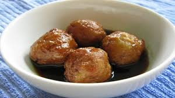

Buñuelos
20 Junio 2018

El Buñuelo es un postre que consiste en bolitas de masa frita con miel, realmente delicioso. Se los puede probar especialmente en fiestas de Quito en varias partes de la ciudad, sobretodo en su centro historico.
Bolon
20 Junio 2018

El bolon de verde es una bola formada principalmente por verde majado relleno por lo general de queso o chicharron. Es un plato tipico de la costa Ecuatoriana y lo puedes encontrar en cualquier ciudad de la costa en especial en Guayaquil.